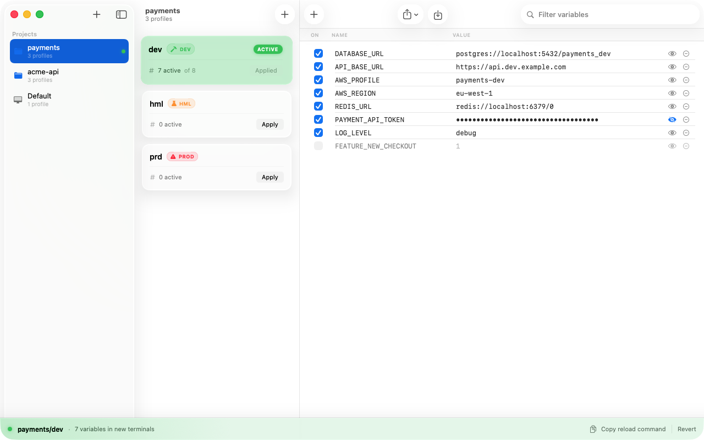
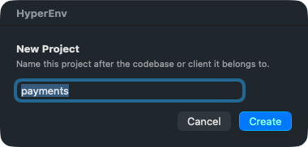
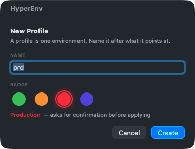

A pile of .env files
Nothing on screen says which one is loaded. Two identical-looking shells, two different databases.
HyperEnv switches the environment variables your terminals inherit — per project, per environment. You can always see which one is live, and putting it back is one click.

Anyone working against more than one backend ends up juggling
.env files, source commands and half-remembered
exports. The failure is rarely that switching is hard. It is that nothing
tells you which environment the terminal in front of you is actually
pointed at.
Nothing on screen says which one is loaded. Two identical-looking shells, two different databases.
The file drifts, backups pile up, and one typo costs you a working login shell.
Every other tool — an editor terminal, a task runner, a CI shim — starts outside the setup.
A project per codebase or client. Inside it, a profile per environment — development, homologation, production, or your own — each holding its own set of variables.
Every profile carries an environment class. Production is red wherever it appears, asks for confirmation before it is applied, and takes a shape in the menu bar that no other state uses.
A bar along the bottom of the window names the applied profile and its variable count. The menu bar shows it without switching apps.
Reverting puts back each variable’s previous value, and unsets only the ones that did not exist before. A variable that was empty comes back empty.
No process can rewrite a running shell’s environment. HyperEnv says so plainly and puts the one command that fixes it a single click away.
It tells you when your shell stops matching what was applied — including the case a checksum cannot catch, where something set the same variable after HyperEnv’s block and quietly won.
Three dialects — POSIX shell, quoted dotenv and docker --env-file — with a preview before anything is written.
On first launch it takes a snapshot of your existing shell environment, sorted by whether each variable is safe to reuse, so you start from what you already have.
HyperEnv never edits your dotfiles line by line. It adds one guarded
block to ~/.zprofile, once, and everything after that
happens in files it owns.
# >>> hyperenv managed block v1 >>> (do not edit)
[ -r "${HOME}/.config/hyperenv/session.zsh" ] && . "${HOME}/.config/hyperenv/session.zsh"
# <<< hyperenv managed block v1 <<<Applying a profile rewrites that one generated file:
# Generated by HyperEnv. Do not edit — changes are overwritten on apply.
# Project: payments
# Profile: prd
[[ -n "$HYPERENV_DISABLE" ]] && return
export AWS_PROFILE='payments-prd'
export DATABASE_URL='postgres://…'New login shells source it and inherit the profile. At the same moment HyperEnv writes the matching inverse script, so the undo exists before you need it — and keeps working even if you delete the app first.
~/.zprofile is copied aside before a single byte changes.HYPERENV_DISABLE=1 zsh -l gives you a shell as if HyperEnv were never installed.Three steps, about a minute.
Name it after the codebase or client it belongs to. It starts empty — no profiles are invented for you.

Green, orange, red or purple. The badge is the environment class, so choosing red is also choosing to be asked for confirmation before that profile is ever applied.

Type them in, or import an existing .env. Applying
points every new terminal at that profile, and the bar along the
bottom names it from then on — as in the window at the top of this
page.
curl -fsSL https://hyperenv.falcaosl.com/install.sh | bash
Uses Homebrew if you have it, downloads the disk image if you do not, and
clears the quarantine attribute so the first launch works. It never uses
sudo, and it checks the download against the SHA-256
published with the release before installing anything.
Piping a script into a shell is worth being careful about, including this
one. Read it first if you would rather:
install.sh, or
curl -fsSL https://hyperenv.falcaosl.com/install.sh -o install.sh.
brew tap iramarfalcao/hyperenv https://github.com/iramarfalcao/hyperenv
brew trust iramarfalcao/hyperenv
brew install --cask hyperenv
brew trust is not optional: Homebrew refuses to load a cask
from a third-party tap until you say once that you trust it.
Download HyperEnv.dmg SHA-256 checksum
Verify it before opening:
shasum -a 256 HyperEnv.dmgBuilds are ad-hoc signed rather than signed with a paid Apple Developer ID, so macOS blocks the first launch. Right-click HyperEnv in Applications and choose Open, or run this once:
xattr -dr com.apple.quarantine /Applications/HyperEnv.appSaid plainly because it matters: this build is not notarized by Apple. The source is public and every release publishes its checksum, so you can verify what you downloaded — or build it yourself in one command.
No, and nothing can — a process cannot rewrite the environment of a child that is already running. HyperEnv changes what new sessions inherit, and gives you a one-click command to bring an existing shell up to date.
It touches ~/.zprofile only, adding three lines between
its own markers, and only after you press Install Hook.
The file is backed up first, and removing the block restores it byte
for byte.
/etc/zprofile runs path_helper, which
reorders PATH — anything PATH-related written to
.zshenv is silently undone before your shell is ready.
.zshenv also runs for every non-interactive shell, which
would leak profile credentials into unrelated scripts and cron jobs.
No, and it would be dishonest to imply otherwise.
session.zsh must be sourceable by zsh, so it
holds plaintext. It is written 0600 in your home
directory. Masking a value hides it in the interface only. Treat the
file exactly as you would treat any .env.
Not yet. HyperEnv targets zsh, the macOS default login
shell, and refuses to install its hook if your login shell is
something else rather than writing a file that would not work.
Free and open source under the MIT licence. No account, no telemetry, no paid tier, no network calls of any kind.
Remove the hook from inside the app first, then delete the app — or
brew uninstall --cask hyperenv. Adding
--zap also removes ~/.config/hyperenv. A
leftover block in .zprofile is harmless: it is guarded and
does nothing once the files are gone.